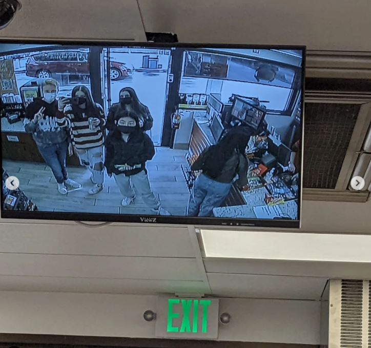
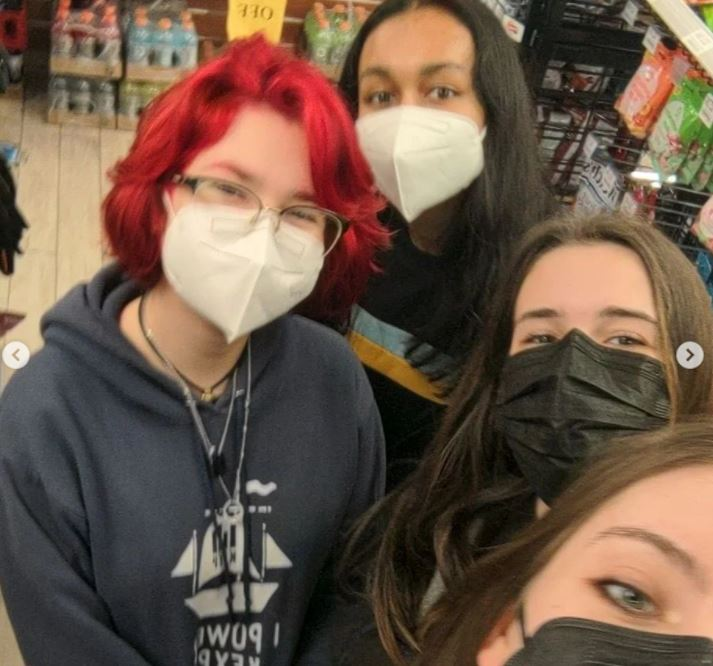

My Favorite Thing About School
A simple answer to what my favorite thing about school is to say my friends. At EPS I fostered connections between
students of different personalities, grades, and interests and I deeply value all of my relationships. I am a deeply
emotional person. The honest connections that can be created through vulnerable conversation and a side-step
out of my comfort zone have gotten me some amazing friends and experiences here at school. In any other space
in my life,
there isn't the same level of openness to connect with people in my peer group. School provides a
perfect opportunity of people with different backgrounds and alignments of the same age required to be under the
same institution. While
saying my friends are my favorite part of school feels like a cop-out answer (because of
course I like my friends!), friends and peers make learning a space of comfort and growth.
Some Pictures of Me and My Friends


Acomplishments
Being at school with people who have a vast amount of different interests
means that I get to experience the cool things my friends make and do.
Here is a song that my friends Emma W. and Oliver C. made together.